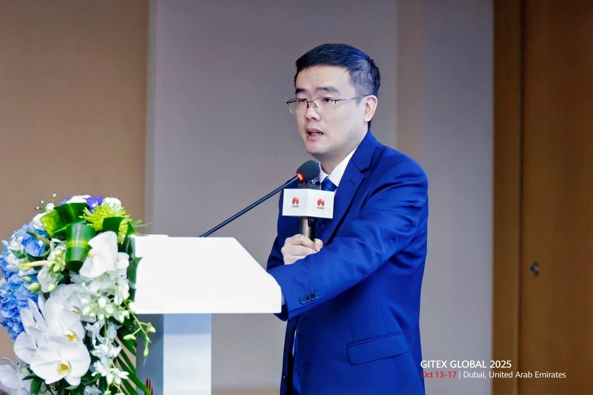

<html>
<title>Huawei Tanıtım</title>
<link rel="stylesheet" type="text/css" href="../haberler.css">
<meta charset="UTF-8">
</html>


<body>


<div class="navigasyon_bar">

	<a href="../haberler.html"> <div class="ic_div">  </div> </a>
	

	<a href="../../huawei_hakkında/huawei_hakkinda.html"> <div class="ic_div"> Huawei Hakkında </div> </a>
	<a href="../../urunler/urunler.html"> <div class="ic_div"> Ürünler </div> </a>

	<a href="../../sürdürülebilirlik/sürdürülebilirlik.html"> <div class="ic_div"> Sürdürülebilirlik </div> </a>

	<a href="../../eğitim/egitim.html"> <div class="ic_div"> Eğitim </div> </a>
	<a href="../../haberler/haberler.html"> <div class="ic_div"> Haberler </div> </a>

</div>

<!------------------------------------------------------------>

<div class="haber_sayfasi">
<h1 class="baslik">
Huawei, sektörler genelinde dijital ve akıllı dönüşümü hızlandıran "Imagine Wi-Fi 7 to Reality" programının 4. sezonunu tamamladı.</h1>

<p class="metin">
<br><br><br>

[Dubai, BAE, 15 Ekim 2025] GITEX GLOBAL 2025 sırasında Huawei, "Tüm Zekayı Elde Etmek İçin Birlikte Yapay Zeka Kampüsleri İnşa Etmek" temalı bir forum düzenledi. Forum, yapay zeka ve gelişmekte olan BİT'lerin kampüslerin dijital ve akıllı dönüşümünü nasıl yönlendirebileceğini keşfetmek için küresel iş liderlerini, sektör ortaklarını ve teknik uzmanları bir araya getirdi. Forumda Huawei ve Umman Havaalanları birlikte akıllı bir kampüs tanıtımını gerçekleştirdi.
<br><br>

Huawei Ürün Portföyü Pazarlama ve Çözüm Satışları Departmanı Başkanı Eric Li, açılış konuşmasında, "Huawei, uzun yıllardır akıllı kampüslerle yakından ilgilenmektedir. Bilgi ve iletişim teknolojileriyle kampüsleri yeniden tanımlamaya inanıyoruz ve ürün portföylerimizin avantajlarından yararlanarak kampüs bağlantısını, platformlarını ve hizmetlerini yeniden şekillendiriyoruz." dedi. Ona göre, Huawei, ortaklarıyla birlikte bugüne kadar dünya çapında 1.000'den fazla müşterinin 10 Gbps, dijital ve yeşil akıllı kampüsler kurmasına yardımcı oldu. Eric, yapay zekanın kampüsleri daha hızlı bir şekilde akıllı dünyaya taşıyacağını vurguladı. Ayrıca, Huawei'nin küresel müşteriler ve ortaklarla birlikte yapay zeka kampüsleri kurmak ve endüstri zekası için bir yol haritası oluşturmak üzere çalışacağını belirtti.
<br><br>




Huawei Kampüs Ekibi CEO'su Eric He, konuşmasında kampüslerin enerji ve bilgi devrimlerinin kesiştiği merkezler haline geldiğini ve sektörler genelinde dijital ve akıllı dönüşümü hızlandırdığını belirtti. Gelişmiş BİT'lerden yararlanan Huawei, ortaklarıyla birlikte dört katmanlı mimariye sahip akıllı bir kampüs çözümü geliştirdi ve eCampusCore 2.0'ı resmen piyasaya sürdü. Huawei, yüksek zeka ve yapay zekanın bir arada bulunduğu, her senaryoda bağlantı sağlayan ve hizmet olarak alan sunan yapay zeka kampüsleri inşa etmeye kararlıdır. Bu kampüsler, iş ve yaşamımız için her senaryoda zeka sağlayan, her yerde bulunan akıllı alanlar sunacaktır.
<br><br><br>

Huawei'nin Kampüs Ağları Alanı, Veri İletişim Ürünleri Bölümü Başkanı Shawn Zhao da forumda bir konuşma yaptı. Konuşmasında, kullanıcı deneyimine odaklanan Yüksek Kaliteli 10 Gbps CloudCampus 2.0'ın kablosuz bağlantıyı, uygulama performansını, işletme ve bakım (O&M) süreçlerini ve güvenliği geliştirdiğini ve kampüs ağlarının inşasında bağlantı merkezli yaklaşımdan deneyim merkezli yaklaşıma geçişi sağladığını vurguladı. Shawn Zhao, bu geçişin kampüslerin zekasını hızlandıracağına ve yapay zeka çağında başarılarını artıracağına inanıyor.
 <br><br><br>


Umman Havaalanları Bilgi ve İletişim Teknolojileri Altyapı ve Güvenlik Başkan Yardımcısı Basim Al Lawati, akıllı kampüs inşası uygulamalarını tanıttı. Umman Havaalanları, akıllı bir kampüs örneği oluşturmak için Huawei ile ortaklık kurdu. Dünyanın Wi-Fi 7'yi benimseyen ilk havaalanı olan bu örnek, 1 milyon metrekareden fazla bir alanı kapsamak için 4.700'den fazla Wi-Fi 7 erişim noktası (AP) ve dinamik zoomlu akıllı anten kullanıyor. Bu sayede yolcular, havaalanının her yerinden sorunsuz Wi-Fi 7 ağlarının keyfini çıkarabiliyor ve yüksek yoğunluklu check-in alanlarında yüzlerce eş zamanlı kullanıcı için sıfır gecikme sağlanıyor. Huawei'nin iMaster NCE platformundan yararlanan havaalanı, gerçek zamanlı ağ durumu görselleştirme, optimizasyon ve sorun giderme işlemlerini gerçekleştirerek işletme ve bakım verimliliğini %90 oranında artırdı. Ayrıca, Huawei'nin Entegre Kampüs Güvenlik Çözümü havaalanını 7/24 korurken, Süper Kodlama video depolama için gereken alanı önemli ölçüde azaltıyor. Umman Havaalanları tarafından benimsenen yeni bilgi ve iletişim teknolojileri, inovasyondaki liderliğini vurgulayarak akıllı havaalanları için yeni bir ölçüt belirlemesine yardımcı oluyor.
 <br><br><br>


Kampüslerin Dijital ve Akıllı Dönüşümünü Geliştirmek İçin Ortaklarla İş Birliği Yapmak
Huazhao Technology CEO'su Johnson Zhang, şirketin Akıllı Ofis Konferans Odası Çözümü hakkında bilgi verdi. Bu çözüm, Huawei Wi-Fi 7 CSI algılama ve AP'ler ile IdeaHub arasında ekran iş birliği gibi yeni özellikleri bir araya getiriyor. Ayrıca UBAINS'in profesyonel görsel-işitsel ürünlerini ve yapay zeka yeteneklerini entegre ederek, kamu ve kurumsal müşteriler için yeni bir verimlilik düzeyinde iş birliği sağlıyor.
<br><br>
Bittel Grubu'nun Çin, Afrika ve Tayland Bölgesi Pazarlama Direktörü Jane Zhuang, yeni nesil Akıllı Otel Çözümlerini tanıttı. Yapay zeka, Nesnelerin İnterneti (IoT) ve Huawei'nin en yeni Wi-Fi 7 CSI algılama teknolojisine dayanan çözüm, daha kullanışlı, konforlu ve güvenli bir akıllı konaklama deneyimi sunuyor.
<br><br>
Yapay Zeka Kampüsü vizyonu şimdiden şekillenmeye başladı. İnovasyon rehberliğinde Huawei, küresel müşterileri ve ortaklarıyla el ele vererek her kampüse zeka katacak. Birlikte, endüstrilerin akıllı dönüşümünde yeni bir sayfa açacağız.
 <br><br><br>


</p>

</div>


<footer class="alt-banner">
  <h1 class="footer_baslik">HUAWEI</h1>

<div class="ustbar">

	<a href="../../index.html" > 
	</img>
	</a>

		<a href="https://www.facebook.com/HuaweiEnterprise" > 
	</img>
	</a>
<a href="https://www.linkedin.com/company/huawei-enterprise" > 
	</img>
	</a>
<a href="https://x.com/HUAWEient" > 
	</img>
	</a>
<a href="https://www.instagram.com/huaweient/" > 
	</img>
	</a>
<a href="https://www.youtube.com/user/HuaweiEnterprise" > 
	</img>
	</a>
	

</div>


  <div class="foot_divs">
    <a href="https://app.huawei.com/eplus/front/index.html#/download">
      <div class="foot_div1">
        
        Huawei e+ Uygulaması
      </div>
    </a>

    <a href="https://app.huawei.com/eplus/soho/front/index.html#/download">
      <div class="foot_div1">
        
        Huawei eKit Uygulaması
      </div>
    </a>

    <a href="https://m.support.huawei.com/intl/prod/enterprisemobile/brochure/index_en.html">
      <div class="foot_div1">
        
        Huawei HiKnow Uygulaması
      </div>
    </a>

    <a href="https://app.huawei.com/eplus/smb/front/index.html#/download?countryCode=Global">
      <div class="foot_div1">
        
        Huawei eFly Uygulaması
      </div>
    </a>
  </div>

  <div class="foot">
    <a href="https://www.huawei.com/en/contact-us">Bize Ulaşın</a>
    <a href="https://www.huawei.com/en/legal">Kullanım Şartları</a>
    <a href="https://www.huawei.com/en/privacy-policy">Gizlilik Politikası</a>
    <a href="https://www.huaweicloud.com/intl/en-us/">Huawei Bulut</a>
  </div>

  <p class="last_foot">© 2026 Tüm hakları saklıdır</p>
</footer>


</div>

</body>
